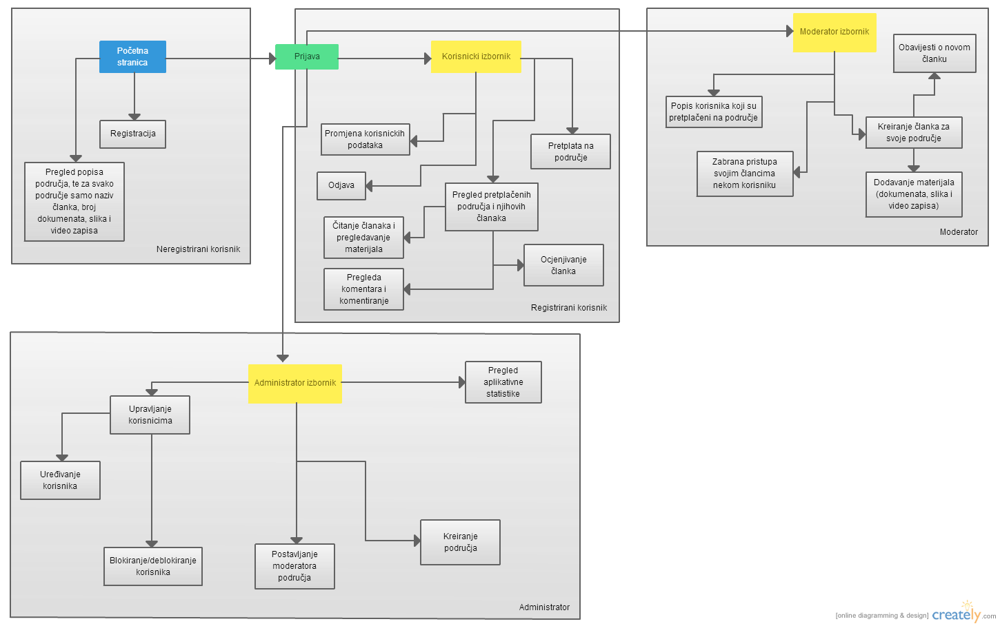

Dokumentacija
Opis projektnog zadatka
Vodič za preživljavanje
Ovaj sustav pomaže korisnicima u učenju tehnika preživljavanja u različitim područjima. Korisnici mogu nači mnoge korisne materijale kao što su slike, video zapisi i ostali materijali koji opisuju kako preživjeti.
Uloge:
-
Administrator
-Administrator upravlja cijelim sustavom. On kreira Područja te dodjeljuje moderatore za određena područja.
može vidjeti aplikativnu statistiku i može blokirati ili odblokirati nekog korisnika.
-
Moderator
-Moderator piše i uređuje članke za područje koje mu je dodjeljeno. Vidi komentare na svoje članke i prema potrebi može blokirat nekog korisnika ako
piše uvredljive komentare na članke. Prilikom pisanja novih članaka moderator može priložiti uz taj članaka slike, video materijale i dodatne
materijale.
-
Registrirani korisnik
-Kako bi vidi članke od nekog područja prvo se mora pretplatiti na to područje. Ukoliko je pretplačen može pregledavati članke tog područja,
materijale koji se nalaze u tom članku, te može ostaviti svoj komentar na članaka i ocijeniti članak.
-
Neregistrirani korisnik
-Može vidjeti popis područja, te za svako područje popis članaka tog područja. Uz svaki članak mu se prikazuje koliko taj članak ima slike, video materijala i ostalih materijala.
Opis projektnog rješenja i bitne odrednice projektnog rješenja
Projektno rješenje koje je nastalo na temelju opisa projektnog zadatka, najbolje se može isčitati iz sljedećih dviju slika. Slika navigacijskog dijagrama prikazuje realiziranu funkcionalnost sustava,dok ERA model prikazuje strukturu tablica potrebnih za samu realizaciju sustava.

Popis i opis skripata
CSS:
- dizajn.css -cjelokupni izgled stranice
- mobile.css -specifično formatiranje za mobitele
- tablet.css -specifično formatiranje za tablet
- pc.css -specifično formatiranje za stolno računalo
- tv.css -specifično formatiranje za televizore visoke rezolucije
JavaScript:
- registracijaJQ.js -validacija korisničkih podataka
- tablica.js -dodaje DataTable funkcije na tablicu
- validacija.js -validacija podataka prilikom registracije na korisničkoj strani
PHP:
- aktivacija.php -aktiviranje korisnika putem emaila
- baza.class.php -rad s mysql bazom
- blokiraj.php -blokiranje korisnika od strane administratora
- detaljipodrucja.php -služi za generiranje i ispis svih članaka nekog područja
- dodajMat.php -dodavanje slika vezanih uz određeni članak
- dodajOst.php -dodavanje ostalih materijala vezanih uz određeni članak
- dodajVid.php -dodavanje video materijala vezanih uz određeni članak
- footer.php -generira podnožje
- header.php -generira zaglavlje
- index.php -početna stranica
- izmjeneOsobne.php -administrator mjenja podatke o korisniku
- korisnici.php -ispis svih korisnika
- kreiraj.php -za kreiranje novog područja
- lozinka.php -šalje lozinku korisniku ukoliko ju je zaboravio
- materijali.php -prikazuje sve materijale nekog članka
- noviClanak.php -kreira novi članaka nekog područja
- noviModerator.php -kreira novog moderatora iz odbranog korisnika
- oClanku.php -prikazuje podatke o članku, komentare i ocjenu
- odblokiraj.php -admin odlokirava korisnika
- odjava.php -služi za odjavljivanje korisnika sa sustava
- osobniPodaci.php -promjena korisnikovih osobnih podataka
- poModeratoru.php -ispis broja članaka po moderatoru
- poPodrucju.php -ispis broja članaka po području
- podrucjeClanovi.php -prikaz korisnika koji su pretplačeni na područje
- pomak.php -pomak vremena
- popisClanaka.php -popsi svih članaka nekog moderatora
- popisPodrucja.php -popis područja na koja se krisnik može pretplatiti
- pretplata.php -pretplačivanje na određeno područje
- pretplate.php -ispis područja na koja je korisnik pretplačen
- prijava.php -prijava na sustav
- promijeniKomentar.php -mijenja komentar
- prosOcje.php -prikazuje prosječnu ocjenu svakog moderatora
- registracija.php -registracija novog korisnika
- uredi.php -služi za uređivanje nekog članka
- videoPo.php -prikazuje koliko je koji moderator stavio video materijala
- zabrani.php -korisnik više ne može vidjeti članak
Mapa mjesta
-
Početna
-
Registracija
-
Prijava
-
Početna administrator
- Popis blokiranih
- Aplikativna statistika
- Popis područja
- Kreiranje područja
- Povezivanje moderatora s područjem
- Kreiranje novog moderatora
- Popis korisnika
- Promjena korisničkih podataka
- Blokiranje i odblokiravanje korisnika
- Osobni podaci
-
Početna moderator
- Novi članak
- Popis napisanih članaka
- Detalji članka
- Pregled materijala
- Uređivanje članka
- Blokiranje korisnika
- Komantiranje
- Dodavanje slike
- Dodavanje videa
- Dodavanje ostalih materijala
- Osobni podaci
-
Početna korisnik
- Sva područja
- Osobni podaci
- Pregled članaka
- Dodatni materijali
- Komentiranje
- Ocjenjivanje
Korištene tehnologije i alati
Prilikom izrade su korištene sljedeće tehnologije:
-
HTML 5 / CSS3
- JavaScript
- JQuery
- DataTables
- PHP
- MySQL
- Smarty
Vanjski (tuđi) moduli
Tuđi vanjski modul koji je bio korišten za izradu projekta je Recaptcha koja se koristi za izbjegavanje automatizirane registacije.